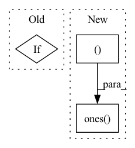

Pattern ID :1441
Before Change
:return: attention result of shape (B, N, F) where B is the batch size, N the query sequence length
and F the number of output channels (= `num_output_channels`)
if attn_mask is not None:
raise NotImplementedError("attention masks not supported yet")
q = self.q_proj(x_q)
k = self.k_proj(x_kv)After Change
i = q.shape[2]
j = k.shape[2]
causal_mask = torch.ones( (i, j ), device=x_q.device, dtype=torch.bool) .triu(j - i + 1)
attn.masked_fill_(causal_mask, attn_max_neg)
attn = attn.softmax(dim=-1)In pattern: SUPERPATTERN
Frequency: 4
Non-data size: 3
Instances Fragment ID: 4943179
Project Name: krasserm/perceiver-io
Commit Name: c2b9af32775fd28f693dd1b572142935efd31b99
Time: 2022-09-25
Author: krasserm@googlemail.com
File Name: perceiver/model/core/modules.py
M Class Name: MultiHeadAttention
N Class Name: MultiHeadAttention
M Method Name: forward(6)
N Method Name: forward(5)
M Parent Class: nn.Module
N Parent Class: nn.Module
M File Name: perceiver/model/core/modules.py
N File Name: perceiver/model/core/modules.py
M Start Line: 64
M End Line: 93
N Start Line: 75
N End Line: 120
Before Change
if padding > 0:
quad_q, quad_k, lin_q, lin_k, v = map(lambda t: F.pad(t, (0, 0, 0, padding), value = 0.), (quad_q, quad_k, lin_q, lin_k, v))
if exists(mask):
mask = F.pad(mask, (0, padding), value = False)
// group along sequence
After Change
if padding > 0:
quad_q, quad_k, lin_q, lin_k, v = map(lambda t: F.pad(t, (0, 0, 0, padding), value = 0.), (quad_q, quad_k, lin_q, lin_k, v))
mask = default(mask, torch.ones( (b, n ), device = device, dtype = torch.bool) )
mask = F.pad(mask, (0, padding), value = False)
// group along sequence Fragment ID: 4943176
Project Name: lucidrains/flash-pytorch
Commit Name: 2a0bf49fc80567fbec4d8c88fbf94cd6cc9dce73
Time: 2022-03-28
Author: lucidrains@gmail.com
File Name: flash_pytorch/flash_pytorch.py
M Class Name: FLASH
N Class Name: FLASH
M Method Name: forward(2)
N Method Name: forward(2)
M Parent Class: nn.Module
N Parent Class: nn.Module
M File Name: flash_pytorch/flash_pytorch.py
N File Name: flash_pytorch/flash_pytorch.py
M Start Line: 286
M End Line: 291
N Start Line: 254
N End Line: 287
Before Change
max_number_negative = (
torch_mask_time_indices.sum(dim=-1).min() // self.negative_threshold
)
if self.config.num_negatives > max_number_negative:
dynamic_num_negatives = max_number_negative
else:
dynamic_num_negatives = torch.tensor(
self.config.num_negatives,After Change
// Fairseq does it only on the masked indices, but this only work if you
// have long sentences. For more versatily, we sample on the entire sequence.
// value.
full_sentence_indices = np.ones( (batch_size, sequence_length ))
// print(np.sum(mask_time_indices, axis=1))
negative_sample_indices = torch.tensor(
transformers.models.wav2vec2.modeling_wav2vec2._sample_negative_indices( Fragment ID: 4943175
Project Name: speechbrain/speechbrain
Commit Name: f0cab3643a40b62ad19d5a3eaafbc8d19f4805e4
Time: 2021-12-11
Author: parcollet.titouan@gmail.com
File Name: speechbrain/lobes/models/huggingface_wav2vec.py
M Class Name: HuggingFaceWav2Vec2Pretrain
N Class Name: HuggingFaceWav2Vec2Pretrain
M Method Name: forward(2)
N Method Name: forward(2)
M Parent Class: nn.Module
N Parent Class: nn.Module
M File Name: speechbrain/lobes/models/huggingface_wav2vec.py
N File Name: speechbrain/lobes/models/huggingface_wav2vec.py
M Start Line: 362
M End Line: 398
N Start Line: 351
N End Line: 369
Before Change
if self.use_bottleneck:
f = self.bottleneck(f)
y = self.fc(f)
if keep_features:
return y, f
else:
return y
After Change
def forward(self, f_s, f_t, alpha=1.):
d_s = self.domain_discriminator(f_s, alpha)
d_label_s = torch.ones( (f_s.size(0), 1 )) .cuda()
d_t = self.domain_discriminator(f_t, alpha)
d_label_t = torch.zeros((f_t.size(0), 1)).cuda()
return 0.5 * (self.bce(d_s, d_label_s) + self.bce(d_t, d_label_t)) Fragment ID: 4943173
Project Name: thuml/transfer-learning-library
Commit Name: f71b15472263676f48c2d185d626ebd44dea15d7
Time: 2020-02-19
Author: JiangJunguang1123@outlook.com
File Name: dalib/models/dann.py
M Class Name: DANN
N Class Name: DomainAdversarialLoss
M Method Name: forward(4)
N Method Name: forward(3)
M Parent Class: nn.Module
N Parent Class: nn.Module
M File Name: dalib/models/dann.py
N File Name: dalib/models/dann.py
M Start Line: 31
M End Line: 41
N Start Line: 39
N End Line: 44